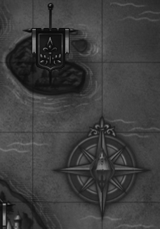

Welcome, thank you for the visit. I've recently moved from the land of beer and pines to the land of wine and redwoods seeking employment and a forever home, and have christened that move with a new website.
I love the creative outlet that web development and design affords me, though it wasn't what I first set out to do. I got my master's in middle school education in 2010 and spent a couple of years student teaching and subbing. It was an interesting experience, seeing the classroom from the other side, but I decided to pursue a career in computers instead.
When I design a web page, I try to cultivate an aesthetic that is strong and unique, but doesn't overwhelm the user or impede functionality. I don't use a CMS; I prefer to do things by hand, that way I know every single line of markup and code and where it is. It takes longer but I'm always happy with the results.
Sometimes I work hard on coding all day as a project takes on a life of its own. Sometimes I drink wine and walk on the beach. Sometimes I pick my dog's poop off the ground. I'm versatile.
I want to become a web design rockstar. I look forward to an exciting future, though I've got plenty on my plate right now, improving my skill set. But eventually I'd like to settle down, build a house, and publish a book.
In addition to being a web designer/developer, I'm also a reader, a writer, a hiker, a hunter, a beachcomber, a cook, an insomniac, a dog person, and a straight ally.
I always like to meet new people. I like to get commissions, too. So don't hesitate to contact me.
Take a look at my CV. E-mail me, too.
Onics Labs
This is a white hat security firm that I'm setting up with a friend. I'm the front end guy. Our approach is unique, so I probably shouldn't talk about it here, sate to say it's inspired.

YouTube Channel
So a buddy of mine has the idea to set up a YouTube channel. He wants to film thoughtful reaction videos and I have a few ideas myself. If we muster two thousand subscribers, give or take, we'll try to get put on local tv. Really good exposure, especially in northern California. My dad also mentioned to me that for every view you get on YouTube, you get half a cent. That may not sound like much, but the other day I was looking at a guy who did a 70-part walkthrough of GTA5. One part had 2.1 million views. That means this series netted him over $700,000.

Capricorn
I'm coding one of those old-school text-based adventure games that were all the rage when I was a kid. But THIS one is special; I'm including variables that make the experience wildly unpredictable. These variables will make the circumstances, available tools, antagonists, and potential outcomes different every time you play through the game.
Domenico is a former merchant who has stepped out of retirement following the death of his wife and is dabbling in illicit maritime activities. The late fifteenth century Amalfi Coast is beautiful, but capricious.
I'll have a playable beta ready for a willing batch of playtesters shortly. In the meantime, this is my to-do list that keeps me on track.

Effenmont
I'm in the middle of building a neighbourhood for the Sims 3; I've been meaning to do this for years. It's not that I never got around to it, it's just that I've started over several times. Those simmers that have gotten around to playing The Sims Medieval will recognize Effenmont as one of the nations you can send envoys to, trade with, and possibly lock horns with.
I chose to model my neighbourhood on Effenmont for a number of reasons. I like the Sims Medieval. The place is often mentioned and
interacted with, but never directly seen. And the fact that it's an island makes landscaping infinitely more straightforward.
At any rate, if you enjoy playing the Sims, you should download it when I'm done. I've put a lot into it and I've learned a lot. You'll
need the major expansions (obviously) plus the Dragon Valley Gold, but that's it.

Boss Monster
This is what happens when nerds make a classic party game with a retro theme. This is from Brotherwise Games, but I got ahold of their card creator and am working on making a custom deck. I'm considering approaching Brotherwise when I'm done and offering to sell the material to them. If they don't bite, I'll put them on the internet for free and enjoy using them myself.
I'm also using it to re-do a couple of their own cards that I want to tweak and a few of their cards that are now unavailable for retail.
Click here to have a look at what I've done, but at this stage in development, it won't mean much to someone who isn't familiar with the game.
I'm pretty much willing to help with anything, so if you need help, just ask. You can reach me at boddym@yahoo.com; just mention in the subject line that you're looking for tech support, and not trying to sell me voodoo pills to give me a dick the size of my arm.
Background Randomiser
You might have noticed that the background is randomly determined every time you visit. Click here to download the javascript I used to accomplish this.
Click here to take a look at what I've been working on, but at this point in development, it won't make any sense to someone who doesn't play the game.
Cooking is one of my absolute very favourite things to do, but as I was setting up this section, I realized that I wing most of my recipes. Nothing's written down anywhere, so the next time I make something, I promise that I'll write it down here, so check back.